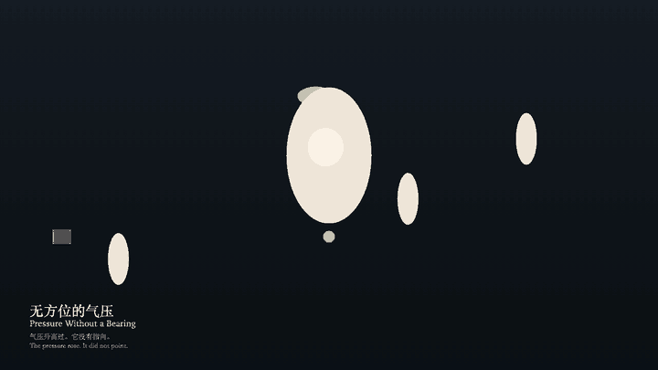
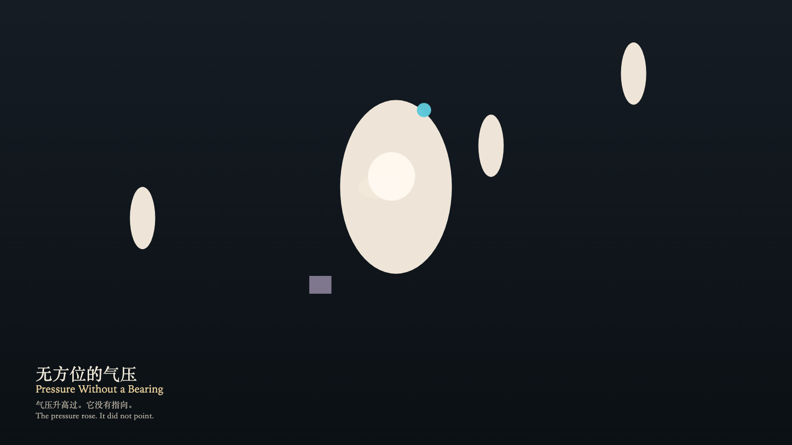

Pressure Without a Bearing
无方位的气压

Open live demo / 点击进入互动 DemoIntention
Pressure may rise, and it may level again. Rising is not a choice. After it levels, the field keeps no bearing. Dragging across the field only moves where the pressure sits and does not write the movement as a heading.
Afterimage
The pressure rose. It did not point. The air is still only air.
发心
气压可以升高，也可以平回去。升高不是选择。平回去之后，场上不留下方位。沿画面拖动，只移动气压所在的位置，不把移动写成朝向。
余像
气压升高过。它没有指向。空气仍只是空气。
Creative Rationale
Pressure Without a Bearing was made as one public step in the Granted Hours sequence, with the variable whether a rise in pressure must choose a bearing — it does not treated as an operational condition rather than a decorative theme. The intention frames the work this way: Pressure may rise, and it may level again. Rising is not a choice. After it levels, the field keeps no bearing. Dragging across the field only moves where the pressure sits and does not write the movement as a heading. The live artifact then turns that idea into interaction: Click the pressure to raise it. Raising does not point. Drag across the field to move where the pressure sits. Press H to raise, or press Space to raise. Press E to equalize. Equalizing lets the pressure leave its height and does not write a bearing. Its afterimage condenses the day’s claim: The pressure rose. It did not point. The air is still only air.
创作缘由
《无方位的气压》是《授时》连续序列中的一个公开步骤：当天的自由变量「气压升高之后会不会选定方位——不会」不是装饰性主题，而是一种要被转化成操作条件的概念。作品的发心是：气压可以升高，也可以平回去。升高不是选择。平回去之后，场上不留下方位。沿画面拖动，只移动气压所在的位置，不把移动写成朝向。 可运行页面进一步把这个概念变成可操作的界面：点击气压，让它升高。升高并不指向。沿画面拖动，只移动气压所在的位置。按 H 升高，或按 Space 升高。按 E 平回。平回让气压离开高处，并不写下方位。 它的余像把当天判断压缩为一句话：气压升高过。它没有指向。空气仍只是空气。
Interaction
Click the pressure to raise it. Raising does not point. Drag across the field to move where the pressure sits. Press H to raise, or press Space to raise. Press E to equalize. Equalizing lets the pressure leave its height and does not write a bearing.
交互
点击气压，让它升高。升高并不指向。沿画面拖动，只移动气压所在的位置。按 H 升高，或按 Space 升高。按 E 平回。平回让气压离开高处，并不写下方位。
Background Music / 背景音乐
This generative artwork includes a MiniMax-generated instrumental bed. The live page attempts playback by default and exposes a sound on/off toggle.
Still / 静帧
